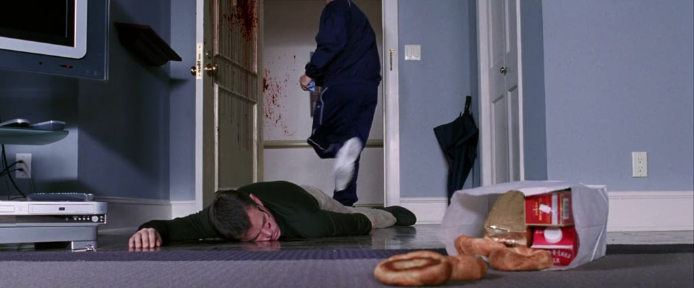

Image context
Search input:
Mornings in ground and first Hoar, afternoon in ventilated basement. Vertical nomadism And when I stepped onto the area of clean fresh floor in the art gallery I was concerned that I had maybe stepped onto something that did not have the same solid firmness as the proper floor. A drawing representing a horizontal section taken above a floor to show, diagrammatically, the enclosing walls of a building, its doors and windows, and the arrangement of its interior spaces.
Search mode: paragraph_v Targeting: 1.5×
Selected image

Region 0 — breakfast, columbine
All regions
Region 0 — ['withdrawing', 'screaming', 'courthouse', 'running'], ['overthrow', 'courthouse', 'running', 'furniture'], ['autopsy', 'preacher', 'gambler', 'bathtub'], ['newborn', 'autopsy', 'bathtub'], ['departing', 'commute', 'leaving'], ['commute', 'leaving', 'departing'], ['consul', 'furniture', 'commode'], ['withdrawing', 'undercarriage', 'crotch'], ['mouthing', 'guest', 'gambler'], ['flipping', 'mover'], ['breakfast', 'columbine'], ['handcuff', 'crotch'], ['newborn', 'cherubic'], ['commode', 'breakfast'], ['flagship', 'undercarriage'], ['flagship', 'carryall'], ['causeway', 'undulating'], ['install', 'undulating'], ['carryall', 'napkin'], ['guest', 'overthrow', 'furniture'] assets/film_frames_300/Dogville_-_Lars_von_Trier_(2003)__696cd36556__t01219.000__tc00-20-19.000__w300.jpg — ['withdrawing', 'screaming', 'courthouse', 'running']assets/film_frames_300/Pulp_Fiction_-_Quentin_Tarantino_(1994)__f2cb376fd5__t00599.000__tc00-09-59.000__w300.jpg — ['overthrow', 'courthouse', 'running', 'furniture']assets/film_frames_300/Apocalypse_Now_-_Francis_Ford_Coppola_(1979)__45272410d9__t00350.000__tc00-05-50.000__w300.jpg — ['autopsy', 'preacher', 'gambler', 'bathtub']assets/film_frames_300/Happy_Together_-_Wong_Kar-wai_(1997)__b276a5c50c__t04630.000__tc01-17-10.000__w300.jpg — ['newborn', 'autopsy', 'bathtub']assets/film_frames_300/La_Haine_-_Mathieu_Kassovitz_(1995)__36600a9b03__t04429.000__tc01-13-49.000__w300.jpg — ['departing', 'commute', 'leaving']assets/film_frames_300/La_Haine_-_Mathieu_Kassovitz_(1995)__2240879990__t04430.000__tc01-13-50.000__w300.jpg — ['commute', 'leaving', 'departing']assets/film_frames_300/Blue_Velvet_-_David_Lynch_(1986)__4cdb82e7de__t01394.000__tc00-23-14.000__w300.jpg — ['consul', 'furniture', 'commode']assets/film_frames_300/Chungking_Express_-_Wong_Kar-wai_(1994)__e4248bd621__t00542.000__tc00-09-02.000__w300.jpg — ['withdrawing', 'undercarriage', 'crotch']assets/film_frames_300/Pulp_Fiction_-_Quentin_Tarantino_(1994)__4242b619ff__t03493.000__tc00-58-13.000__w300.jpg — ['mouthing', 'guest', 'gambler']assets/film_frames_300/Live_Flesh_(Carne_trmula)_-_Pedro_Almodvar_(1997)__12808c0d8b__t04150.000__tc01-09-10.000__w300.jpg — ['flipping', 'mover']assets/film_frames_300/The_Departed_-_Martin_Scorsese_(2006)__b7a0588b8a__t08650.000__tc02-24-10.000__w300.jpg — ['breakfast', 'columbine']assets/film_frames_300/Once_Upon_a_Time_in_Hollywood_-_Quentin_Tarantino_(2019)__f0632ce9fd__t09042.000__tc02-30-42.000__w300.jpg — ['handcuff', 'crotch']assets/film_frames_300/Trainspotting_-_Danny_Boyle_(1996)__f2bb2fe39b__t02941.000__tc00-49-01.000__w300.jpg — ['newborn', 'cherubic']assets/film_frames_300/Blue_Velvet_-_David_Lynch_(1986)__6fd35b171f__t01420.000__tc00-23-40.000__w300.jpg — ['commode', 'breakfast']assets/film_frames_300/The_Wolf_of_Wall_Street_-_Martin_Scorsese_(2013)__e8105142bc__t03629.000__tc01-00-29.000__w300.jpg — ['flagship', 'undercarriage']assets/film_frames_300/Jackie_Brown_-_Quentin_Tarantino_(1997)__3bac666d76__t06360.000__tc01-46-00.000__w300.jpg — ['flagship', 'carryall']assets/film_frames_300/Nausica_of_the_Valley_of_the_Wind_-_Hayao_Miyazaki_(1984)__fbca586c41__t05470.000__tc01-31-10.000__w300.jpg — ['causeway', 'undulating']assets/film_frames_300/There_Will_Be_Blood_-_Paul_Thomas_Anderson_(2007)__7c3f1a003d__t08944.000__tc02-29-04.000__w300.jpg — ['install', 'undulating']assets/film_frames_300/Triangle_of_Sadness_-_Ruben_stlund_(2022)__5e1c6fd57f__t04910.000__tc01-21-50.000__w300.jpg — ['carryall', 'napkin']assets/film_frames_300/Rosemarys_Baby_-_Roman_Polanski_(1968)__d82cbc7970__t02121.000__tc00-35-21.000__w300.jpg — ['guest', 'overthrow', 'furniture']Region 1 — ['encountering', 'gathering', 'schoolyard', 'entourage'], ['encountering', 'curator', 'truffle'], ['walking', 'truffle', 'curator'], ['panelling', 'moulding', 'stoop'], ['hairspray', 'entourage', 'eat'], ['enlargement', 'kiss'], ['werewolf', 'dryer'], ['barman', 'drink'], ['deuce', 'werewolf'], ['panelling', 'liturgy'], ['intertwine', 'delve'], ['catholic', 'liturgy'], ['navigator', 'delve'], ['barrister', 'gathering'], ['walking', 'intertwine'], ['maneuvering', 'brakeman'], ['inspect', 'moulding'], ['cornerstone', 'stoop'], ['showered', 'deuce'], ['brakeman', 'schoolyard'] assets/film_frames_300/The_Cat_Returns_-_Hiroyuki_Morita_(2002)__1df5f79e79__t03662.000__tc01-01-02.000__w300.jpg — ['encountering', 'gathering', 'schoolyard', 'entourage']assets/film_frames_300/Magnolia_-_Paul_Thomas_Anderson_(1999)__f2d2c15ad0__t08665.000__tc02-24-25.000__w300.jpg — ['encountering', 'curator', 'truffle']/film-frame?film=%2FVolumes%2FPhD_drive2%2FVTFilms%2FThe.Big.Lebowski.1998.1080p.BrRip.x264.YIFY%2BHI.mp4&t=5858.000&w=1024 — ['walking', 'truffle', 'curator']assets/film_frames_300/Ocean_Waves_(I_Can_Hear_the_Sea)_-_Tomomi_Mochizuki_(1993)__3425947db7__t00338.000__tc00-05-38.000__w300.jpg — ['panelling', 'moulding', 'stoop']assets/film_frames_300/The_Wolf_of_Wall_Street_-_Martin_Scorsese_(2013)__8586587685__t07441.000__tc02-04-01.000__w300.jpg — ['hairspray', 'entourage', 'eat']assets/film_frames_300/Paprika_-_Satoshi_Kon_(2006)__f96e854a19__t03530.000__tc00-58-50.000__w300.jpg — ['enlargement', 'kiss']assets/film_frames_300/Monster_-_Hirokazu_Kore-eda_(2023)__51c0485d83__t07210.000__tc02-00-10.000__w300.jpg — ['werewolf', 'dryer']assets/film_frames_300/Pusher_-_Nicolas_Winding_Refn_(1996)__f683996a00__t02630.000__tc00-43-50.000__w300.jpg — ['barman', 'drink']assets/film_frames_300/Caught_Stealing_-_Darren_Aronofsky_(2025)__21545f4cc9__t00416.000__tc00-06-56.000__w300.jpg — ['deuce', 'werewolf']assets/film_frames_300/Dark_Habits_(Entre_tinieblas)_-_Pedro_Almodvar_(1983)__53f3c4f1cb__t02404.000__tc00-40-04.000__w300.jpg — ['panelling', 'liturgy']assets/film_frames_300/Stalker_-_Andrei_Tarkovsky_(1979)__35ad71c8f0__t08430.000__tc02-20-30.000__w300.jpg — ['intertwine', 'delve']assets/film_frames_300/There_Will_Be_Blood_-_Paul_Thomas_Anderson_(2007)__eedbcdf7b4__t08239.000__tc02-17-19.000__w300.jpg — ['catholic', 'liturgy']assets/film_frames_300/Castle_in_the_Sky_-_Hayao_Miyazaki_(1986)__49d7d041ba__t00260.000__tc00-04-20.000__w300.jpg — ['navigator', 'delve']assets/film_frames_300/Songs_from_the_Second_Floor_-_Roy_Andersson_(2000)__267024adc3__t04438.000__tc01-13-58.000__w300.jpg — ['barrister', 'gathering']assets/film_frames_300/Broken_Embraces_(Los_abrazos_rotos)_-_Pedro_Almodvar_(2009)__3cec2bd267__t02313.000__tc00-38-33.000__w300.jpg — ['walking', 'intertwine']assets/film_frames_300/Brazil_-_Terry_Gilliam_(1985)__31a7e9a93d__t07730.000__tc02-08-50.000__w300.jpg — ['maneuvering', 'brakeman']assets/film_frames_300/Babylon_-_Damien_Chazelle_(2022)__2a70143cd6__t09996.000__tc02-46-36.000__w300.jpg — ['inspect', 'moulding']assets/film_frames_300/The_Graduate_-_Mike_Nichols_(1967)__cdef87eb70__t04473.000__tc01-14-33.000__w300.jpg — ['cornerstone', 'stoop']assets/film_frames_300/Woman_in_the_Dunes_-_Hiroshi_Teshigahara_(1964)__772922bfb2__t03609.000__tc01-00-09.000__w300.jpg — ['showered', 'deuce']assets/film_frames_300/Porco_Rosso_-_Hayao_Miyazaki_(1992)__f3bd3fe989__t02446.000__tc00-40-46.000__w300.jpg — ['brakeman', 'schoolyard']Region 2 — ['liaison', 'fanatic', 'instinct', 'walk'], ['huddle', 'coven', 'firebombed', 'courtyard'], ['fanatic', 'fashion', 'walk'], ['coven', 'courtyard', 'dogma'], ['dogma', 'minimal', 'pulpit'], ['stepmother', 'liaison', 'fashion'], ['transaction', 'wrenching', 'huddle'], ['looped', 'flickering', 'shadow'], ['looped', 'shadow', 'flickering'], ['nostril', 'headlamp', 'compactor'], ['proposal', 'stepmother', 'instinct'], ['smitten', 'bookmark'], ['nostril', 'sleepiness'], ['fanatic', 'transaction', 'bookmark'], ['compactor', 'boiler'], ['smitten', 'proposal'], ['licking', 'anguish'], ['sleepiness', 'anguish'], ['goodbye', 'minimal'], ['compactor', 'boiler'] assets/film_frames_300/Broken_Embraces_(Los_abrazos_rotos)_-_Pedro_Almodvar_(2009)__3cec2bd267__t02313.000__tc00-38-33.000__w300.jpg — ['liaison', 'fanatic', 'instinct', 'walk']assets/film_frames_300/Andrei_Rublev_-_Andrei_Tarkovsky_(1966)__a5b927960e__t00320.000__tc00-05-20.000__w300.jpg — ['huddle', 'coven', 'firebombed', 'courtyard']assets/film_frames_300/Bronson_-_Nicolas_Winding_Refn_(2008)__7ac709ae49__t01680.000__tc00-28-00.000__w300.jpg — ['fanatic', 'fashion', 'walk']assets/film_frames_300/Dogville_-_Lars_von_Trier_(2003)__5f69b774ed__t05910.000__tc01-38-30.000__w300.jpg — ['coven', 'courtyard', 'dogma']assets/film_frames_300/Dark_Habits_(Entre_tinieblas)_-_Pedro_Almodvar_(1983)__53f3c4f1cb__t02404.000__tc00-40-04.000__w300.jpg — ['dogma', 'minimal', 'pulpit']assets/film_frames_300/In_the_Mood_for_Love_-_Wong_Kar-wai_(2000)__cc6f2f6555__t00101.000__tc00-01-41.000__w300.jpg — ['stepmother', 'liaison', 'fashion']assets/film_frames_300/Fight_Club_-_David_Fincher_(1999)__ea6b38767e__t04531.000__tc01-15-31.000__w300.jpg — ['transaction', 'wrenching', 'huddle']assets/film_frames_300/Babylon_-_Damien_Chazelle_(2022)__9c46c2542d__t08780.000__tc02-26-20.000__w300.jpg — ['looped', 'flickering', 'shadow']assets/film_frames_300/Magnolia_-_Paul_Thomas_Anderson_(1999)__8e2acec4d8__t00226.000__tc00-03-46.000__w300.jpg — ['looped', 'shadow', 'flickering']assets/film_frames_300/Babylon_-_Damien_Chazelle_(2022)__3c089066eb__t09994.000__tc02-46-34.000__w300.jpg — ['nostril', 'headlamp', 'compactor']assets/film_frames_300/Pulp_Fiction_-_Quentin_Tarantino_(1994)__511cb3acf5__t03479.000__tc00-57-59.000__w300.jpg — ['proposal', 'stepmother', 'instinct']assets/film_frames_300/Paprika_-_Satoshi_Kon_(2006)__f96e854a19__t03530.000__tc00-58-50.000__w300.jpg — ['smitten', 'bookmark']assets/film_frames_300/Pulp_Fiction_-_Quentin_Tarantino_(1994)__02ea5356ab__t05700.000__tc01-35-00.000__w300.jpg — ['nostril', 'sleepiness']assets/film_frames_300/Beau_Travail_-_Claire_Denis_(1999)__d7fad0c994__t01140.000__tc00-19-00.000__w300.jpg — ['fanatic', 'transaction', 'bookmark']assets/film_frames_300/12_Monkeys_-_Terry_Gilliam_(1995)__f2f025843c__t02307.000__tc00-38-27.000__w300.jpg — ['compactor', 'boiler']assets/film_frames_300/In_the_Mood_for_Love_-_Wong_Kar-wai_(2000)__97ea7fbb4c__t02724.000__tc00-45-24.000__w300.jpg — ['smitten', 'proposal']assets/film_frames_300/The_Departed_-_Martin_Scorsese_(2006)__0e8d43f6ef__t02590.000__tc00-43-10.000__w300.jpg — ['licking', 'anguish']assets/film_frames_300/The_Gentlemen_-_Guy_Ritchie_(2019)__50f6dfac0d__t02022.000__tc00-33-42.000__w300.jpg — ['sleepiness', 'anguish']assets/film_frames_300/Audition_-_Takashi_Miike_(1999)__5bc76af28d__t01750.000__tc00-29-10.000__w300.jpg — ['goodbye', 'minimal']assets/film_frames_300/Stalker_-_Andrei_Tarkovsky_(1979)__469d02729d__t05250.000__tc01-27-30.000__w300.jpg — ['compactor', 'boiler']Region 3 — ['shutter', 'confinement', 'coordinate', 'storeroom', 'door', 'locker', 'payphone', 'subway', 'respirator', 'imprisoned'], ['prisoner', 'locker', 'caretaker', 'rehabilitation', 'imprisoned', 'confinement', 'sacrament', 'custodial', 'inmate'], ['subconsciously', 'sacrament', 'inmate', 'imprisoned', 'windowpane', 'accompany', 'sink', 'caretaker'], ['door', 'locker', 'windowpane', 'jailed', 'shutter', 'coordinate', 'imprisoned', 'confinement', 'payphone'], ['coordinate', 'jailhouse', 'inmate', 'confinement', 'locking', 'railing', 'prisoner', 'jailed', 'imprisoned'], ['sink', 'storeroom', 'fridge', 'radiator', 'locker', 'subconsciously'], ['wheelchair', 'custodial', 'rehabilitation'], ['coordinate', 'shortcut', 'metro', 'subway'], ['shortcut', 'asylum', 'accompany', 'door'], ['deli', 'poplar', 'windowpane', 'door', 'payphone', 'structuring'], ['structuring', 'poplar', 'deli', 'payphone', 'door', 'windowpane'], ['inmate', 'imprisoned', 'coordinate', 'dispose', 'accountability'], ['asylum', 'radiator'], ['refuse', 'storeroom', 'dispose'], ['wheelchair', 'railing'], ['bear', 'vulture'], ['door', 'windshield', 'locker', 'payphone', 'car'], ['accountability', 'accompany', 'sacrament', 'coordinate'], ['asylum', 'vulture'], ['coordinate', 'abroad'] assets/film_frames_300/Black_Dog_-_Guan_Hu_(2024)__7ff298c78e__t04050.000__tc01-07-30.000__w300.jpg — ['shutter', 'confinement', 'coordinate', 'storeroom', 'door', 'locker', 'payphone', 'subway', 'respirator', 'imprisoned']assets/film_frames_300/Songs_from_the_Second_Floor_-_Roy_Andersson_(2000)__857c6f8059__t00279.000__tc00-04-39.000__w300.jpg — ['prisoner', 'locker', 'caretaker', 'rehabilitation', 'imprisoned', 'confinement', 'sacrament', 'custodial', 'inmate']assets/film_frames_300/Black_Dog_-_Guan_Hu_(2024)__f24ec5df8a__t00555.000__tc00-09-15.000__w300.jpg — ['subconsciously', 'sacrament', 'inmate', 'imprisoned', 'windowpane', 'accompany', 'sink', 'caretaker']assets/film_frames_300/Fight_Club_-_David_Fincher_(1999)__922a144f66__t06154.000__tc01-42-34.000__w300.jpg — ['door', 'locker', 'windowpane', 'jailed', 'shutter', 'coordinate', 'imprisoned', 'confinement', 'payphone']assets/film_frames_300/Harakiri_-_Masaki_Kobayashi_(1962)__db185e7d47__t04820.000__tc01-20-20.000__w300.jpg — ['coordinate', 'jailhouse', 'inmate', 'confinement', 'locking', 'railing', 'prisoner', 'jailed', 'imprisoned']assets/film_frames_300/Fight_Club_-_David_Fincher_(1999)__3099fb97c2__t01637.000__tc00-27-17.000__w300.jpg — ['sink', 'storeroom', 'fridge', 'radiator', 'locker', 'subconsciously']assets/film_frames_300/Paprika_-_Satoshi_Kon_(2006)__53770e3947__t00767.000__tc00-12-47.000__w300.jpg — ['wheelchair', 'custodial', 'rehabilitation']assets/film_frames_300/Songs_from_the_Second_Floor_-_Roy_Andersson_(2000)__c06754ac3a__t04740.000__tc01-19-00.000__w300.jpg — ['coordinate', 'shortcut', 'metro', 'subway']assets/film_frames_300/Another_Round_(Druk)_-_Thomas_Vinterberg_(2020)__4175b1f19f__t05755.000__tc01-35-55.000__w300.jpg — ['shortcut', 'asylum', 'accompany', 'door']assets/film_frames_300/Snatch_-_Guy_Ritchie_(2000)__408116e264__t01650.000__tc00-27-30.000__w300.jpg — ['deli', 'poplar', 'windowpane', 'door', 'payphone', 'structuring']assets/film_frames_300/Snatch_-_Guy_Ritchie_(2000)__408116e264__t01650.000__tc00-27-30.000__w300.jpg — ['structuring', 'poplar', 'deli', 'payphone', 'door', 'windowpane']assets/film_frames_300/Kikujiro_-_Takeshi_Kitano_(1999)__68dc861821__t01242.000__tc00-20-42.000__w300.jpg — ['inmate', 'imprisoned', 'coordinate', 'dispose', 'accountability']assets/film_frames_300/Fight_Club_-_David_Fincher_(1999)__49b65904e3__t06150.000__tc01-42-30.000__w300.jpg — ['asylum', 'radiator']assets/film_frames_300/Werckmeister_Harmonies_-_Bla_Tarr_gnes_Hranitzky_(2000)__85f7b8b2c6__t07180.000__tc01-59-40.000__w300.jpg — ['refuse', 'storeroom', 'dispose']assets/film_frames_300/Arrietty_-_Hiromasa_Yonebayashi_(2010)__534339cee7__t03410.000__tc00-56-50.000__w300.jpg — ['wheelchair', 'railing']assets/film_frames_300/The_Hateful_Eight_-_Quentin_Tarantino_(2015)__5d9c0e6f97__t06300.000__tc01-45-00.000__w300.jpg — ['bear', 'vulture']assets/film_frames_300/Snatch_-_Guy_Ritchie_(2000)__2ccd5f4b8e__t02192.000__tc00-36-32.000__w300.jpg — ['door', 'windshield', 'locker', 'payphone', 'car']assets/film_frames_300/Kikujiro_-_Takeshi_Kitano_(1999)__77694fa28d__t01250.000__tc00-20-50.000__w300.jpg — ['accountability', 'accompany', 'sacrament', 'coordinate']assets/film_frames_300/Amour_-_Michael_Haneke_(2012)__a4231ce93c__t06970.000__tc01-56-10.000__w300.jpg — ['asylum', 'vulture']assets/film_frames_300/Women_on_the_Verge_of_a_Nervous_Breakdown_-_Pedro_Almodvar_(1988)__b2cc7888f9__t04910.000__tc01-21-50.000__w300.jpg — ['coordinate', 'abroad']Region 4 — ['bum', 'apron', 'rear', 'butt'], ['conspiratorial', 'forerunner', 'covenant', 'quarantine'], ['fibreglass', 'tabletop', 'shielded', 'millimetre'], ['dropkick', 'intensified', 'escalating', 'exploiting'], ['millimetre', 'amulet', 'peeler'], ['devours', 'devour', 'woodlouse'], ['conspiratorial', 'clairvoyance', 'clairvoyant'], ['dropkick', 'butt', 'apron'], ['exploiting', 'extremity', 'clobbered'], ['synapse', 'quarantine', 'quarantined'], ['clairvoyant', 'amulet', 'tabletop'], ['jettisoned', 'fibreglass', 'clobbered'], ['vortex', 'jettisoned', 'wispy'], ['vortex', 'wispy', 'warp'], ['dancer', 'soundtrack'], ['activate', 'dancer'], ['escalating', 'extremity'], ['spewing', 'spat'], ['quarantine', 'quarantined', 'synapse'], ['crystalline', 'millimetre', 'woodlouse'] /film-frame?film=%2FVolumes%2FPhD_drive2%2FVTFilms%2FThe.Big.Lebowski.1998.1080p.BrRip.x264.YIFY%2BHI.mp4&t=4470.000&w=1024 — ['bum', 'apron', 'rear', 'butt']assets/film_frames_300/Blade_Runner_-_Ridley_Scott_(1982)__b115c90aad__t01294.000__tc00-21-34.000__w300.jpg — ['conspiratorial', 'forerunner', 'covenant', 'quarantine']assets/film_frames_300/Fargo_-_Joel_Coen_(1996)__bb2c413088__t01470.000__tc00-24-30.000__w300.jpg — ['fibreglass', 'tabletop', 'shielded', 'millimetre']assets/film_frames_300/Pulp_Fiction_-_Quentin_Tarantino_(1994)__9ecf9c537e__t03471.000__tc00-57-51.000__w300.jpg — ['dropkick', 'intensified', 'escalating', 'exploiting']assets/film_frames_300/Beau_Travail_-_Claire_Denis_(1999)__d7fad0c994__t01140.000__tc00-19-00.000__w300.jpg — ['millimetre', 'amulet', 'peeler']assets/film_frames_300/Babylon_-_Damien_Chazelle_(2022)__3c089066eb__t09994.000__tc02-46-34.000__w300.jpg — ['devours', 'devour', 'woodlouse']assets/film_frames_300/Blue_Velvet_-_David_Lynch_(1986)__a77a89610a__t06529.000__tc01-48-49.000__w300.jpg — ['conspiratorial', 'clairvoyance', 'clairvoyant']assets/film_frames_300/Shoplifters_-_Hirokazu_Koreeda_(2018)__37f304705e__t04040.000__tc01-07-20.000__w300.jpg — ['dropkick', 'butt', 'apron']assets/film_frames_300/Babylon_-_Damien_Chazelle_(2022)__1d44fff389__t01335.000__tc00-22-15.000__w300.jpg — ['exploiting', 'extremity', 'clobbered']assets/film_frames_300/Shoplifters_-_Hirokazu_Koreeda_(2018)__2694b10c4b__t01010.000__tc00-16-50.000__w300.jpg — ['synapse', 'quarantine', 'quarantined']assets/film_frames_300/Coffee_and_Cigarettes_-_Jim_Jarmusch_(2003)__9e70000cfc__t05450.000__tc01-30-50.000__w300.jpg — ['clairvoyant', 'amulet', 'tabletop']assets/film_frames_300/Brazil_-_Terry_Gilliam_(1985)__3c71d927d6__t08000.000__tc02-13-20.000__w300.jpg — ['jettisoned', 'fibreglass', 'clobbered']assets/film_frames_300/28_Days_Later_-_Danny_Boyle_(2002)__69364eab79__t02840.000__tc00-47-20.000__w300.jpg — ['vortex', 'jettisoned', 'wispy']assets/film_frames_300/Parasite_-_Bong_Joon-ho_(2019)__14fe4b3743__t04676.000__tc01-17-56.000__w300.jpg — ['vortex', 'wispy', 'warp']assets/film_frames_300/Elvis_-_Baz_Luhrmann_(2022)__56e608792f__t02047.000__tc00-34-07.000__w300.jpg — ['dancer', 'soundtrack']assets/film_frames_300/Brazil_-_Terry_Gilliam_(1985)__84be6dd62c__t05080.000__tc01-24-40.000__w300.jpg — ['activate', 'dancer']assets/film_frames_300/A_History_of_Violence_-_David_Cronenberg_(2005)__b19653bb7c__t05190.000__tc01-26-30.000__w300.jpg — ['escalating', 'extremity']assets/film_frames_300/Fear_and_Loathing_in_Las_Vegas_-_Terry_Gilliam_(1998)__5eb843b563__t05134.000__tc01-25-34.000__w300.jpg — ['spewing', 'spat']assets/film_frames_300/Shoplifters_-_Hirokazu_Koreeda_(2018)__5849ab1838__t01000.000__tc00-16-40.000__w300.jpg — ['quarantine', 'quarantined', 'synapse']assets/film_frames_300/Brazil_-_Terry_Gilliam_(1985)__6154a8f2fc__t00100.000__tc00-01-40.000__w300.jpg — ['crystalline', 'millimetre', 'woodlouse']